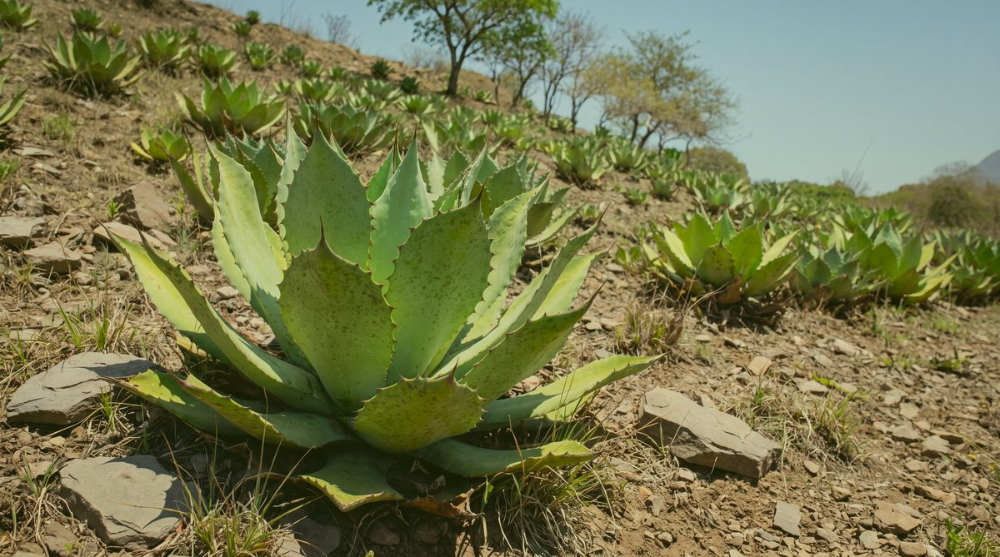

- Gilberto Vásquez
- Maestro mezcalero
- Palenque
- Villa Sola de Vega, Oaxaca

- Villa Sola de Vega, Oaxaca
- Sierra Madre del Sur
- Agave
- A. angustifolia, espadín
- Agave
- A. angustifolia, espadín
- 50 %
- 700 ml
- Villa Sola de Vega, Oaxaca
- Maestro
- Gilberto Vásquez